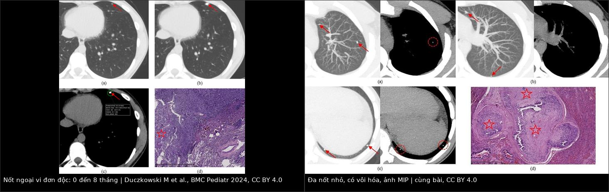
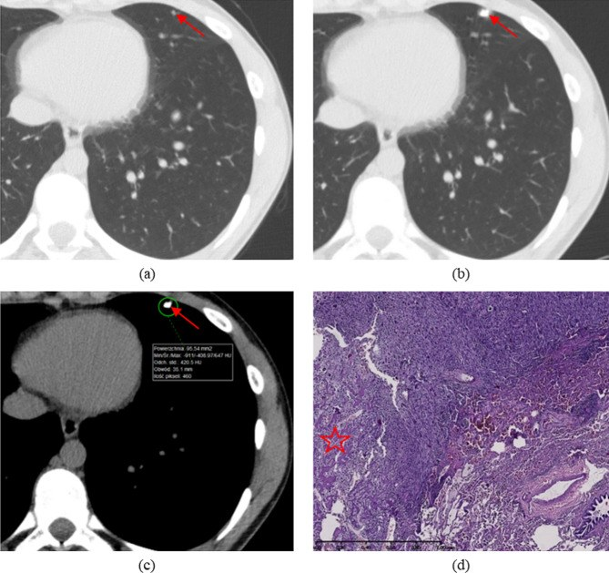
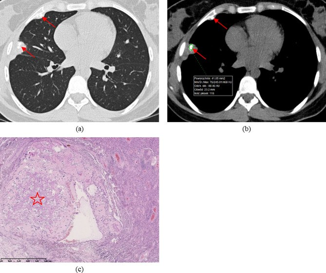
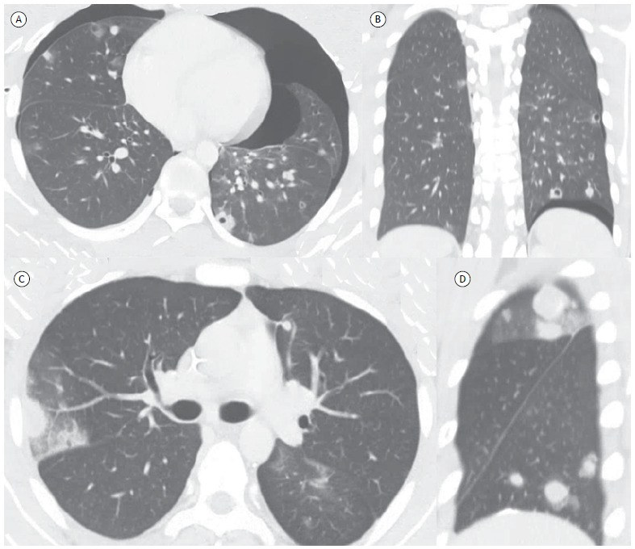
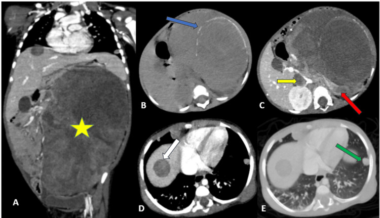

6701 — Di căn phổi ở Wilms & sarcoma xương ở trẻ: nốt nào cắt, nốt nào theo dõi / Pulmonary metastases in pediatric Wilms tumor and osteosarcoma: which nodule to resect
Tags: pattern:not pattern:da-not pattern:di-can pattern:voi-hoa vung:phoi score:EURAMOS score:RECIST protocol:CT-nguc protocol:CT-lieu-thap protocol:metastasectomy incidentaloma:not-phoi
Mức chắc chắn (certainty): tổng hợp y văn (literature synthesis) — đoàn hệ CT trước mổ ở 100 lần mở ngực vì osteosarcoma (Duczkowski M et al., BMC Pediatr 2024, PMC11145898), ca Wilms di căn phổi–gan (Elaitari K et al., Cureus 2025, PMC12476164), đặc điểm CT di căn osteosarcoma (Silva JAM et al., J Bras Pneumol 2023, PMC10171270), tổng quan điều trị Wilms (Front Pediatr 2022, PMC9333359) và meta-analysis mổ nốt phổi osteosarcoma (World J Surg Oncol 2026, PMC13251309).
Câu chốt của bài: ở trẻ có sarcoma xương, vôi hóa trong nốt phổi KHÔNG loại trừ di căn — ngược lại, nốt vôi hóa trên CT trước mổ là yếu tố dự báo di căn mạnh nhất (Duczkowski). Ở Wilms, đáp ứng của nốt phổi sau 6 tuần hóa trị quyết định có xạ toàn phổi hay không; nốt tồn dư không rõ phải sinh thiết trước khi xạ toàn phổi. Chỉ mổ khi cắt được toàn bộ nốt, kiểm soát được u nguyên phát, còn đủ dự trữ phổi — và với sarcoma xương nên mở ngực có sờ nắn, không chỉ nội soi cắt nốt nhìn thấy.
1. Tổng quan bệnh học – cơ chế hình ảnh
- Wilms (nephroblastoma): u thận ác hay gặp nhất ở trẻ, thường chẩn đoán trước 5 tuổi. Khoảng 10–12% đã di căn lúc chẩn đoán; trong số đó ~80% di căn phổi, gan ít hơn. Phổi là cơ quan di căn chính, nên CT ngực là phần bắt buộc của staging, không thay bằng X-quang.
- Osteosarcoma: u xương nguyên phát ác hay gặp nhất ở trẻ/vị thành niên; phổi là nơi di căn đầu tiên và thường là duy nhất, đồng thời là nguyên nhân tiến triển và tử vong chính. Nhiều ca chỉ có di căn phổi mà không có di căn xương khác.
- Vì sao nốt osteosarcoma hay vôi hóa: tế bào u tạo chất nền xương (osteoid) rồi khoáng hóa → nốt có vôi hóa trung tâm/lệch tâm, đậm độ cao trên CT. Vì vậy vôi hóa là dấu hiệu của mô u xương, không phải dấu hiệu lành tính. Ngược lại, vôi hóa dạng bỏng ngô (popcorn) và có mỡ (−40 đến −120 HU) gợi ý hamartoma lành.
- Vật lý CT — vì sao phải đọc cả hai cửa sổ:
- Cửa sổ phổi (W1500/L−600): phát hiện nốt nhỏ, bờ nốt, dấu mạch nuôi, khí trong nốt.
- Cửa sổ trung thất (W350/L40): đo đậm độ, xác nhận vôi hóa (giá trị HU cao), phân biệt mỡ, dịch, mô đặc; đánh giá hạch trung thất.
- Lát cắt mỏng 1–1,5 mm + MIP (maximum intensity projection): tăng phát hiện nốt nhỏ và nốt bám mạch; MPR giúp định vị nốt trước mổ.
- Ngưỡng định lượng dùng trong bài:
- EURAMOS-1 (đánh giá cả hai phổi): mức A = ít nhất 1 nốt ≥ 10 mm hoặc ≥ 3 nốt ≥ 5 mm; mức B = không đạt A.
- Đánh giá riêng bên phổi sẽ mổ: a = 1 nốt > 10 mm hoặc > 1 nốt > 5 mm; b = nốt đơn 5–10 mm hoặc nhiều nốt 3–5 mm; c = nốt đơn < 5 mm hoặc vài nốt < 3 mm.
- Trong đoàn hệ 100 lần mở ngực: 72% xác nhận có di căn (di căn sống hoặc đã hoại tử) → 28% mở ngực "không cần" nếu chỉ dựa vào tiêu chuẩn lâm sàng lúc đó. Mô hình CT đạt Se 72–92%, PPV 81–90%, accuracy 74–79%.
- Vôi hóa có trên CT trước mổ ở 58% lần mở ngực; số nốt vôi hóa trung bình 1,3 (0–10). Vôi hóa là yếu tố dự báo mạnh nhất trong cả 3 mô hình.
- Tiên lượng sau mổ (osteosarcoma, meta-analysis): mổ nốt phổi so với không mổ HR 0,29 (KTC 95% 0,18–0,46) cho sống sau tái phát; cắt hoàn toàn HR 0,21 (0,12–0,38) cho PRS và 0,31 (0,23–0,42) cho sống sau mổ; di căn hai bên HR 1,56 (1,27–1,93); VATS so với mở ngực HR 1,69 (1,01–2,82); nốt đơn độc sống 5 năm ~50%, > 10 nốt HR 2,38 so với 1 nốt.
- Nốt phổi không xác định (IPN) ở osteosarcoma: nhiều IPN có sống 5 năm 30%, trong khi IPN đơn độc có tiên lượng tương đương không có nốt — số lượng nốt là yếu tố tiên lượng độc lập.
2. Mẫu hình + chẩn đoán phân biệt theo số lượng & bờ nốt (Gamut)
- Nốt đơn độc ngoại vi: di căn osteosarcoma/Wilms (bờ tròn, có thể vôi hóa, lớn dần) vs hạch nội phổi (đậm độ mô mềm, bờ đều, ≤ 10 mm, sát màng phổi/dọc khe) vs u hạt lành (granuloma) (vôi hóa trung tâm/lan tỏa, ổn định ≥ 2 năm) vs hamartoma (vôi hóa bỏng ngô + mỡ) vs nốt viêm/round pneumonia (bờ mờ, có triệu chứng, giảm sau kháng sinh).
- Nhiều nốt nhỏ hai bên: di căn (phân bố ngoại vi, kích thước khác nhau, lớn dần) vs nhiễm nấm xâm lấn (trung tính giảm, nốt có quầng, hang) vs thuyên tắc nhiễm khuẩn (nốt ngoại vi + mạch nuôi) vs lao/kê (hạt kê, phân bố bạch huyết) vs di căn sau điều trị đã hoại tử (nốt không lớn, có thể vôi hóa).
- Nốt có hang/hang mỏng + tràn khí: di căn osteosarcoma hoại tử (thành mỏng, có thể vỡ gây tràn khí màng phổi) vs áp-xe phổi (mức khí–dịch, sốt) vs lao hang vs nấm.
- Nốt mới trong khi hóa trị: di căn kháng trị (lớn lên, có thể vôi hóa thêm) vs nhiễm trùng cơ hội (sốt, giảm bạch cầu) vs huyết khối nhiễm khuẩn vs phản ứng viêm do thuốc.
- Nốt tồn dư sau hóa trị: mô u hoại tử/xơ (nhỏ lại, vôi hóa, không ngấm) vs u sống còn (không nhỏ, ngấm, DWI sáng) — với Wilms, nốt tồn dư không rõ phải sinh thiết ≥ 2 tổn thương trước khi xạ toàn phổi.
- Mnemonic "LUNG METS": Large/≥10 mm — Unilateral/bilateral — Number > 10 — Growth on serial CT — Matrix calcification (osteoid) — Extrapulmonary disease — Timing after primary — Stable ≥ 2 years favors benign.
3. Bảng so sánh phân biệt (ma trận đối chiếu)
| Thực thể (entity) | Hình ảnh điển hình trên CT | Chốt vào (rule-in) | Chốt loại (rule-out) | Gợi ý xác nhận |
|---|---|---|---|---|
| Di căn osteosarcoma | Nốt tròn ngoại vi, vôi hóa trung tâm/lệch tâm, có thể hang hoặc nốt bám mạch; lớn dần; có thể gây tràn khí | Vôi hóa trong nốt + lớn lên + tiền sử osteosarcoma | Vôi hóa bỏng ngô + mỡ −40 đến −120 HU + ổn định ≥ 2 năm → hamartoma | So CT cũ; mở ngực sờ nắn; mô bệnh |
| Di căn Wilms | Nốt mô mềm tròn, bờ rõ, thường không vôi hóa, ngoại vi; giảm/thu nhỏ sau 6 tuần hóa trị | Nốt mới + u thận + đáp ứng với hóa trị theo dõi | Nốt không đổi nhiều năm, vôi hóa đều → u hạt lành | CT ngực sau 6 tuần; sinh thiết nốt tồn dư nếu không rõ |
| U hạt lành (granuloma) | Nốt nhỏ, vôi hóa trung tâm/lan tỏa, bờ đều, ở thùy dưới/thùy giữa | Vôi hóa đều + ổn định ≥ 2 năm + không lớn | Lớn lên, vôi hóa lệch tâm, tiền sử sarcoma → di căn | So phim cũ; theo dõi 3–6 tháng |
| Hamartoma | Vôi hóa bỏng ngô, có mỡ, bờ nhẵn; thường ở ngoại vi | Mỡ trong nốt (−40 đến −120 HU) + vôi hóa bỏng ngô | Không mỡ, vôi hóa lệch tâm → nghi di căn | CT lát mỏng; không cần sinh thiết nếu điển hình |
| Hạch nội phổi | Nốt đặc nhỏ ≤ 10 mm, sát màng phổi/dọc khe, bờ đều, không vôi hóa | Vị trí đặc trưng + ≤ 10 mm + ổn định | > 10 mm, bờ tua, lớn nhanh → di căn | Theo dõi; đối chiếu phim cũ |
| Nhiễm nấm xâm lấn | Nốt có quầng ground-glass, sau đó hang; nhiều ổ; trung tính giảm | Sốt + giảm bạch cầu hạt + nốt có quầng/hang | Nốt đặc vôi hóa, không quầng, không sốt → di căn | Cấy máu, galactomannan, CT lặp |
| Di căn hang + tràn khí | Hang thành mỏng ngoại vi, tràn khí màng phổi cùng bên; có thể tràn khí trung thất | Tràn khí tự phát + nốt hang ở trẻ có sarcoma | Hang có mức dịch + sốt → áp-xe | CT ngực; dẫn lưu khẩn nếu tràn khí nhiều |
| Sẹo/xơ sau điều trị | Mờ tuyến tính/dải, co kéo màng phổi, không lớn, có thể vôi hóa | Ổn định ≥ 6–12 tháng + không khối | Nốt tròn lớn dần → tái phát | So phim; PET/CT nếu còn nghi |

Trái: nốt ngoại vi đơn độc ở đáy phổi, chụp lúc 0 và 8 tháng — lớn lên, xác nhận di căn. Phải: nhiều nốt nhỏ hai bên, một số vôi hóa, ảnh MIP — ở osteosarcoma, vôi hóa không loại trừ di căn. Nguồn: Duczkowski M et al., BMC Pediatr 2024 (PMC11145898), CC BY 4.0; ảnh ghép letterbox.4. Protocol chụp + hệ phân độ/điểm chuẩn hóa
- Kỹ thuật CT ngực trẻ em (ALARA):
- Không cản quang là đủ cho nốt phổi; chỉ cản quang khi cần đánh giá mạch/hạch/trung thất.
- Lát mỏng 1–1,5 mm, thì hít vào tối đa (hợp tác được), tái tạo lung + mediastinal, MPR + MIP; giảm kVp/mAs theo cân nặng, không lặp CT chỉ để "nhìn lại".
- Ghi số nốt, vị trí theo thùy, kích thước lớn nhất, vôi hóa, bờ, khoảng cách màng phổi trong báo cáo — đây là dữ liệu quyết định mổ.
- Lịch chụp:
- Wilms: CT ngực lúc chẩn đoán và sau 6 tuần hóa trị (đánh giá RCR/SIR); sau đó theo phác đồ COG/SIOP và lịch theo dõi tái phát.
- Osteosarcoma: CT ngực lúc chẩn đoán, trước mổ nốt phổi ≤ 4 tuần, sau mổ 3–6 tháng, rồi mỗi 3 tháng trong 2 năm, mỗi 6 tháng đến 5 năm (cá thể hóa theo nguy cơ).
- Wilms — quyết định dựa trên đáp ứng (COG AREN0533):
- Rapid complete response (RCR) sau 6 tuần DD-4A → không xạ toàn phổi.
- Slow incomplete response (SIR) hoặc LOH 1p/16q → hóa trị tăng cường (regimen M) + xạ toàn phổi (WLRT) theo phác đồ.
- Nốt tồn dư không rõ → sinh thiết ≥ 2 tổn thương trước khi WLRT.
- Kết quả AREN0533: 4 năm EFS 85,4% / OS 95,6%, tốt hơn NWTS-5 (72,5% / 84,0%).
- Osteosarcoma — tiêu chí mổ nốt phổi:
- Cắt được toàn bộ nốt đã phát hiện (và nốt sờ thấy khi mổ); kiểm soát được u nguyên phát; đủ dự trữ phổi sau mổ; không có di căn ngoài phổi không kiểm soát; bệnh nhân chịu được gây mê.
- Mở ngực có sờ nắn là chuẩn; VATS chỉ chọn lọc vì có thể bỏ sót nốt nhỏ (HR tử vong 1,69 trong meta-analysis).
- Hai bên: mổ theo thì (thường bên nặng hơn trước), không mổ hai bên cùng lúc nếu không cần.
- Tái phát: vẫn mổ lại nếu còn cắt được toàn bộ — không có giới hạn tuyệt đối số lần.
- Phân tầng CT (EURAMOS-1): A/B cho cả hai phổi; a/b/c cho bên sẽ mổ — dùng để chuẩn hóa chỉ định và so sánh, không thay thế đánh giá đa chuyên khoa.
- Sơ đồ quyết định:
flowchart TD
A[Trẻ có u thận hoặc sarcoma xương: CT ngực lát mỏng] --> B{Có nốt phổi?}
B -->|Không| C[Theo dõi theo phác đồ]
B -->|Có| D{U thận Wilms hay sarcoma xương?}
D -->|Wilms| E[Hóa trị 6 tuần rồi CT ngực lại]
E --> F{Đáp ứng hoàn toàn?}
F -->|Có| G[Không xạ toàn phổi: tiếp tục hóa trị]
F -->|Không| H[Sinh thiết nốt tồn dư nếu chưa rõ]
H --> I[Xạ toàn phổi + hóa trị tăng cường]
D -->|Sarcoma xương| J{Số nốt và kích thước theo EURAMOS}
J --> K{Cắt được toàn bộ và u nguyên phát kiểm soát?}
K -->|Có| L[Mở ngực có sờ nắn: cắt nốt, lấy mô bệnh]
K -->|Không| M[Hóa trị hoặc xạ định vị triệu chứng]
L --> N[CT ngực 3-6 tháng: tái phát thì mổ lại nếu còn cắt được]
5. Biến thể bình thường và cạm bẫy
- Vôi hóa KHÔNG phải bằng chứng lành tính ở osteosarcoma: trong đoàn hệ 100 lần mở ngực, vôi hóa là yếu tố dự báo di căn mạnh nhất, gặp ở 58% ca có di căn. Đừng bỏ qua nốt vôi hóa nhỏ.
- Nốt < 5 mm có thể bị bỏ sót trên lát dày hoặc CT thở ra; dùng lát 1–1,5 mm + MIP, so với phim cũ.
- Mổ nội soi chỉ cắt nốt nhìn thấy có thể bỏ sót nốt nằm sâu; sờ nắn khi mở ngực phát hiện nhiều nốt hơn CT.
- Tràn khí màng phổi tự phát có thể là dấu hiệu đầu tiên của di căn osteosarcoma hoại tử — đừng chỉ điều trị tràn khí mà bỏ qua nốt nguyên nhân.
- Nốt tồn dư sau hóa trị không đồng nghĩa u sống: có thể là hoại tử/xơ; với Wilms, sinh thiết nốt không rõ trước WLRT; với osteosarcoma, chỉ cắt nốt còn lại nếu nghi u sống.
- Nốt mới trong lúc giảm bạch cầu có thể là nấm; đừng gọi di căn ngay khi chưa loại trừ nhiễm.
- Đếm thiếu nốt làm mất tiêu chuẩn "cắt toàn bộ": đọc cả hai phổi, MPR ba bình diện, MIP, ghi rõ từng nốt.
- Sẹo xạ/mổ có thể co kéo và vôi hóa; so phim và đánh giá thay đổi theo thời gian.
6. Tự lượng giá — Blind Quiz
Ca 1 — Bé trai 16 tuổi, osteosarcoma xương đùi, CT ngực lúc chẩn đoán có một nốt ngoại vi đơn độc; 8 tháng sau chụp lại.

- Câu hỏi: Mô tả thay đổi? Nốt này nên theo dõi hay mổ? Vì sao không thể khẳng định lành tính chỉ vì nốt nhỏ?
Bấm để hiện đáp án
- Hình: nốt ngoại vi đơn độc ở đáy phổi; sau 8 tháng nốt lớn lên rõ — tiến triển.
- Chẩn đoán: di căn phổi osteosarcoma. Kích thước ban đầu nhỏ không loại trừ ác; cần so sánh và đo trên cùng cửa sổ.
- Xử trí: mổ cắt nốt nếu cắt được toàn bộ và u nguyên phát kiểm soát; lấy mô bệnh. Nếu chỉ theo dõi, phải chụp lại 3 tháng.
- Nguồn ảnh: Duczkowski M et al., BMC Pediatr 2024 (PMC11145898), Fig. 5, CC BY 4.0.
Ca 2 — Bé gái 14 tuổi, osteosarcoma, 11 năm sau chẩn đoán CT phát hiện hai nốt dưới màng phổi có vôi hóa.

- Câu hỏi: Vôi hóa gợi ý lành tính hay ác tính? Cần làm gì tiếp?
Bấm để hiện đáp án
- Hình: hai nốt dưới màng phổi có vôi hóa, bờ rõ; ROI cho đậm độ 469 HU (canxi).
- Chẩn đoán: di căn osteosarcoma tái phát muộn — vôi hóa do chất nền xương của u, không phải u hạt lành.
- Vì sao: trong osteosarcoma, vôi hóa là yếu tố dự báo di căn mạnh nhất, không phải tiêu chuẩn loại trừ.
- Xử trí: mổ cắt nốt + mô bệnh; đánh giá lại toàn thân.
- Nguồn ảnh: Duczkowski M et al., BMC Pediatr 2024 (PMC11145898), Fig. 3, CC BY 4.0.
Ca 3 — Bé trai 16 tuổi, osteosarcoma xương đùi, đau ngực đột ngột; CT thấy nhiều nốt có hang và tràn khí hai bên.

- Câu hỏi: Chẩn đoán? Vì sao tràn khí xuất hiện? Xử trí ưu tiên?
Bấm để hiện đáp án
- Hình: nhiều nốt có hang thành mỏng ở hai phổi, kèm tràn khí màng phổi hai bên; sau hóa trị nốt vẫn lớn, có quầng.
- Chẩn đoán: di căn osteosarcoma hoại tử có hang, vỡ vào khoang màng phổi gây tràn khí tự phát.
- Xử trí: dẫn lưu khẩn nếu tràn khí nhiều/căng; sau ổn định đánh giá mổ nốt phổi và kiểm soát u.
- Cạm bẫy: nghĩ "áp-xe/lao" vì có hang và bỏ qua tiền sử sarcoma.
- Nguồn ảnh: Silva JAM et al., J Bras Pneumol 2023 (PMC10171270), Fig. 3, CC BY-NC 4.0 — giữ nguyên bản, không crop/ghép.
Ca 4 — Bé gái 20 tháng tuổi, khối thận trái, CT ngực–bụng có nốt phổi và ổ gan.

- Câu hỏi: Phân giai đoạn? Vì sao phải chụp CT ngực? Điều trị định hướng?
Bấm để hiện đáp án
- Hình: khối thận trái lớn (dấu spur sign với thận), huyết khối trong tĩnh mạch chủ dưới, cùng nốt phổi và ổ gan — di căn đa cơ quan.
- Chẩn đoán: Wilms giai đoạn IV (di căn phổi ± gan). Phổi là nơi di căn chính (~80% ca di căn).
- Điều trị: hóa trị theo nguy cơ (DD-4A/regimen M), phẫu thuật cắt thận sau hóa trị, xạ toàn phổi nếu đáp ứng không hoàn toàn; sinh thiết nốt tồn dư không rõ trước WLRT.
- Vì sao CT ngực bắt buộc: X-quang bỏ sót nốt nhỏ; đáp ứng phổi sau 6 tuần quyết định có WLRT.
- Nguồn ảnh: Elaitari K et al., Cureus 2025 (PMC12476164), Fig. 1, CC BY 4.0.
Bài liên quan chéo
- 381 – Di căn phổi MPNST: cắt nốt hay SBRT
- 639 – Khối thận ở trẻ: Wilms vs CMN vs RCC
- 651 – Đánh giá đáp ứng sau điều trị Wilms
- 020 – Nốt phổi
- 016 – Nốt phổi ở bệnh nhân có tiền sử ung thư
- 621 – Nang sán lá phổi ở trẻ
Không dùng để chẩn đoán độc lập khi chưa có người hướng dẫn.